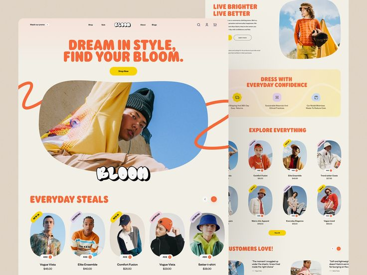
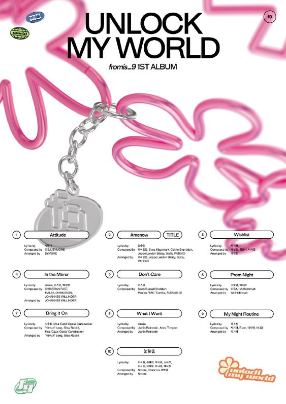
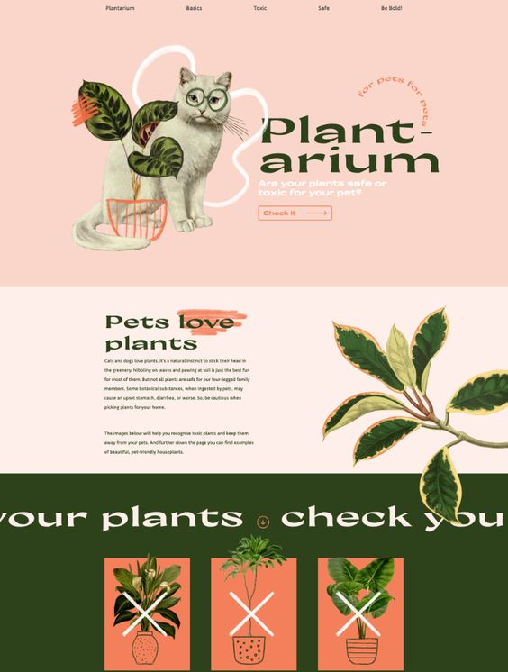

¿Qué es un diseñador web?
Un diseñador web es aquel profesional que se encarga de crear y diseñar sitios web de diferentes tipos: páginas, blogs, landing pages o tiendas online. Su trabajo se basa en el uso y dominio de diferentes herramientas que tienen como resultado la creación de un sitio web al completo.
A diferencia de la profesión del programador web, el diseñador utiliza diferentes herramientas y plataformas para crear sus diseños. Por el contra, el programador crea sitios exclusivos utilizando los diferentes lenguajes de programación, sin recurrir a plantillas o gestores de contenidos.
En cuanto a la parte creativa del diseño web, la tarea del diseñador consiste en aplicar y combinar de manera dinámica los diferentes elementos que forman parte de un sitio web: colores, tipografías, menú, botones, etc. El diseñador debe conocer las tendencias actuales en diseño web y aplicarlas correctamente en sus creaciones, adaptándolas a cada proyecto, cliente y situación.

¿Qué es un diseñador gráfico?
Los diseñadores gráficos son los líderes de demanda en el mercado laboral de diseño. Estos especialistas dibujan ilustraciones, arman collages y crean diseños. No sólo modelan el concepto, sino que también consideran cómo su trabajo ayuda al negocio a conseguir clientes, mantener su atención y promocionar sus productos y servicios. Las responsabilidades de un diseñador gráfico son crear, ensamblar y preparar diseños. Pero la lista concreta de tareas depende de la especialización. El diseño lo hace de acuerdo con las especificaciones técnicas por los gerentes de marketing y los product managers: lo crea desde cero o perfecciona la versión proporcionada.

¿Cuál es la diferencia entre un diseñador gráfico y un diseñador web?
Un diseñador web considera la experiencia del usuario en su trabajo. Determina dónde, de qué color y tamaño colocar el botón en el sitio para que el cliente seguramente haga clic y se suscriba. El diseño gráfico no abarca la experiencia del usuario, sino que únicamente el aspecto visual. Un especialista la ensambla con un prototipo terminado: con estructura, bloques y botones ya formados. Hay más creatividad en el trabajo de un diseñador gráfico, mientras que el trabajo de un diseñador web se enfoca también en programar.
¿Qué es lo que debería saber un diseñador gráfico si desea ser diseñador web?
Bueno, se tendría que convertir en un diseñador Full Stack, que es un profesional que se encarga de llevar a cabo la escala completa del proceso de desarrollo web. Esto significa que cuenta con conocimientos técnicos y habilidades específicas que le ayudan a programar sitios web desde cero. Se caracteriza por ejecutar todo tipo de proyectos y por enfocar sus esfuerzos en crear una experiencia de usuario positiva.

¿Cómo convertirse en uno?
- Aprender los lenguajes básicos de programación.
- Obtener una comprensión general del diseño.
- Estudiar sobre las bases de datos y almacenamiento en caché.
- Construir una red profesional.
- Encontrar una comunidad en línea.
- Formar parte de una organizacióm profesional.